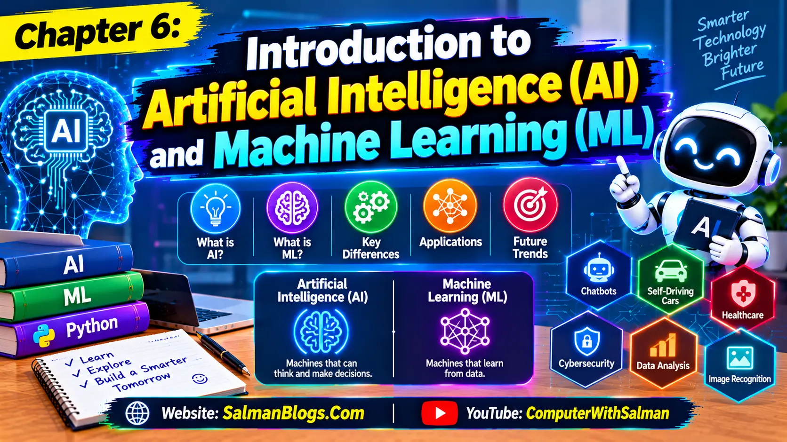

Introduction to Artificial Intelligence (AI) and Machine Learning (ML)
Complete Class 10 Computer Science Chapter 6 notes covering Artificial Intelligence (AI), Machine Learning (ML), AI applications, supervised and unsupervised learning, machine learning algorithms, confusion matrix, and model performance evaluation. Includes simple examples, MCQs, short questions, long questions, and FAQs for FBISE and Punjab Board students.
Class 10 Computer Science Chapter 6: Introduction to AI and Machine Learning
Posted in 10 Computer Science

These lecture notes are prepared by Salman Ahmad, who is both a teacher and a web developer.
The purpose of this material is to make the topic clear and useful for students of Class 10 Computer Science.
What is Python Programming?
Python is a high-level, easy-to-read programming language used to create software, websites, mobile applications, games, artificial intelligence (AI), data analysis applications, and many other types of programs.
Why is Python Called Versatile?
Python is called versatile because it can be used for many different types of work. Instead of learning a different programming language for every task, you can use Python for a wide variety of applications.
Web Development
Artificial Intelligence (AI)
Machine Learning
Data Science
Data Analysis
Automation
Game Development
Desktop Applications
Mobile App Development
Cybersecurity
Web Scraping
Cloud Computing
Internet of Things (IoT)
Robotics
Scientific Computing
Software Development
Networking
Blockchain
Image Processing
Computer Vision
What is Computer Programming?
Computer programming is the process of writing instructions (called code) that tell a computer what to do and how to do it.
A computer cannot think or make decisions on its own. It only follows the instructions given by a programmer.
It is also called coding, programming, or software in everyday language.
Setting Up Python Development Environment
Setting up a Python development environment means installing and configuring the tools needed to write and run Python programs.
Examples of Python Development Environments
These tools are commonly called Integrated Development Environments (IDEs).
Visual Studio Code (VS Code)
PyCharm
Google Colab (Colab)
Jupyter Notebook
IDLE
Spyder
1. Compiler
A compiler translates the whole program into machine code before execution. If errors are found during compilation, they must be corrected before the program can run successfully.
Examples: C and C++ commonly use compilers.
2. Interpreter
An interpreter translates and executes program code line by line. If an error occurs, it may stop execution and show an error message.
Example: Python uses interpreter.
Python Comments
What are Comments?
Comments are notes written inside a Python program to explain the code. They are ignored by the Python interpreter, so they are not executed.
Purpose of Comments
Comments are used to:
Explain what the code does.
Make the code easier to read and understand.
Help other programmers understand the program.
Remind yourself why you wrote a particular piece of code.
Types of Comments
Python mainly has two types of comments:
1. Single-Line Comment
A single-line comment starts with the # symbol.
Syntax
# This is a single-line comment
Example
# Print a welcome message
print("Welcome")
2. Multi-Line Comment
Python does not have a special multi-line comment symbol. A common way is to use triple quotes (''' or ''') to write comments that span multiple lines.
Example
"""
This program
prints a welcome
message.
"""
print("Welcome")
Variables in Python
What is a Variable?
A variable is a named location in memory that is used to store data. The value stored in a variable can be used or changed during the execution of a program.
Python Variables Example
x = 55
y = 66.6
name = "Salman"
age = 28
is_student = True
print(x)
print(y)
print(name)
print(age)
print(is_student)
Output:
55
66.6
Salman
28
True
Rules for Naming Variables
Python has some rules for naming variables.
1. Variable names must start with a letter or an underscore (_).
✅ Correct
name = "Ali"
_age = 20
❌ Incorrect
2name = "Ali"
2. Variable names can contain letters, numbers, and underscores.
✅ Correct
student1 = "Ahmed"
total_marks = 450
❌ Incorrect
student-name = "Ahmed"
(- is not allowed.)
3. Variable names cannot contain spaces.
✅ Correct
first_name = "Ali"
❌ Incorrect
first name = "Ali"
4. Variable names are case-sensitive.
This means uppercase and lowercase letters are treated as different names.
name = "Ali"
Name = "Ahmed"
print(name)
print(Name)
Output:
Ali
Ahmed
name and Name are two different variables.
5. Do not use Python keywords as variable names.
❌ Incorrect
if = 10
class = 5
These words are reserved by Python.
Note: Reserved words (keywords) are predefined words in Python that have a special meaning. They cannot be used as variable names, function names, or class names.
Types of Variables in Python
In Python, variables are commonly classified based on the type of value they store.
1. Integer (int)
An integer stores whole numbers (without decimal points).
Example
age = 20
marks = 95
Explanation
20 and 95 are integers because they are whole numbers.
2. Float (float)
A float stores decimal numbers.
Example
height = 5.8
price = 99.99
Explanation
5.8 and 99.99 are floats because they contain decimal points.
3. String (str)
A string stores text. Text is written inside single (' ') or double (" ") quotes.
Example
name = "Ali"
city = 'Lahore'
Explanation
"Ali" and 'Lahore' are strings because they contain text.
4. Boolean (bool)
A boolean stores only two values:
True
False
Example
is_student = True
is_logged_in = False
Explanation
True means Yes or Correct.
False means No or Incorrect.
Real-Life Example
Imagine a student registration form.
name = "Ali"
age = 20
height = 5.8
is_student = True
Here:
name → String
age → Integer
height → Float
is_student → Boolean
1. Input Operation
An input operation allows the user to enter data into a program.
In Python, the input() function is used to take input from the user.
Input an Integer (int)
Use int(input()) to take a whole number as input.
age = int(input("Enter your age: "))
print(age)
Sample Output:
Enter your age: 20
20
Input a Float (float)
Use float(input()) to take a decimal number as input.
height = float(input("Enter your height: "))
print(height)
Sample Output:
Enter your height: 5.8
5.8
Input a String (str)
Use str(input()) to take text as input.
name = str(input("Enter your name: "))
print(name)
Sample Output:
Enter your name: Ali
Ali
2. Output Operation
An output operation displays information to the user.
In Python, the print() function is used to display output.
Syntax
print(value)
Example
print("Hello, World!")
Output:
Hello, World!
Operators and Expressions in Python
What are Operators?
Operators are special symbols that perform operations on values or variables.
Example
a = 10
b = 5
print(a + b)
Output:
15
Here:
+ is the operator.
It adds the values of a and b.
Types of Operators
1. Arithmetic Operators
Arithmetic operators are used to perform mathematical calculations.
Operator
Meaning
Example
+
Addition
10 + 5 = 15
-
Subtraction
10 - 5 = 5
*
Multiplication
10 * 5 = 50
/
Division
10 / 5 = 2.0
%
Modulus (Remainder)
10 % 3 = 1
**
Exponent (Power)
2 ** 3 = 8
//
Floor Division
10 // 3 = 3
Python Arithmetic Operators Example
a = 10
b = 5
print("Addition:", a + b)
print("Subtraction:", a - b)
print("Multiplication:", a * b)
print("Division:", a / b)
print("Modulus:", a % 3)
print("Exponent:", 2 ** 3)
print("Floor Division:", 10 // 3)
These operators compare two values and return True or False.
Operator
Meaning
Example
==
Equal to
5 == 5 → True
!=
Not equal to
5 != 3 → True
>
Greater than
10 > 5 → True
<
Less than
5 < 10 → True
>=
Greater than or equal to
10 >= 10 → True
<=
Less than or equal to
5 <= 10 → True
Python Comparison (Relational) Operators Example
a = 10
b = 5
print("Equal to:", a == b)
print("Not equal to:", a != b)
print("Greater than:", a > b)
print("Less than:", a < b)
print("Greater than or equal to:", a >= b)
print("Less than or equal to:", a <= b)
Output:
Equal to: False
Not equal to: True
Greater than: True
Less than: False
Greater than or equal to: True
Less than or equal to: False
3. Assignment Operators
These operators assign values to variables.
Operator
Meaning
Example
=
Assign
x = 10
+=
Add and assign
x += 5
-=
Subtract and assign
x -= 5
*=
Multiply and assign
x *= 2
/=
Divide and assign
x /= 2
%=
Modulus and assign
x %= 3
//=
Floor divide and assign
x //= 2
**=
Exponent and assign
x **= 2
Python Assignment Operators Example
x = 10
x += 5
print(x)
x = 10
x -= 5
print(x)
x = 10
x *= 2
print(x)
x = 10
x /= 2
print(x)
x = 10
x %= 3
print(x)
x = 10
x //= 3
print(x)
x = 5
x **= 2
print(x)
Output:
15
5
20
5.0
1
3
25
4. Logical Operators
Logical operators combine two or more conditions into a single expression and return True or False.
Operator
Meaning
and
True if both conditions are True.
or
True if at least one condition is True.
not
Reverses the result.
Python Logical Operators Example
x = 10
y = 5
print(x > 5 and y < 10)
print(x > 20 or y < 10)
print(not(x > 5))
Output:
True
True
False
Operator Precedence in Python
What is Operator Precedence?
Operator precedence is the order in which Python evaluates operators in an expression.
Simple Definition:
Operator precedence is the set of rules that determines which operation is performed first in an expression.
Operator Precedence Table
Precedence
Operator
Description
1 (Highest)
()
Parentheses
2
**
Exponent
3
*, /, //, %
Multiplication, Division, Floor Division, Modulus
4
+, -
Addition, Subtraction
5
==, !=, >, <, >=, <=
Comparison Operators
6
not
Logical NOT
7
and
Logical AND
8 (Lowest)
or
Logical OR
Expression in Python
An expression is a combination of values, variables, and operators that produces a result.
Examples of Expressions in Python
2 + 2
2 + x
x + y
x * y + 2 - 2 + y
a - b
x * 5
a / b
x + y * 2
a + b - c
x ** 2
x % 2
(a + b) * c
x - y + z
a * b + c / 2
(x + y) * (a - b)
What is a Control Structure in Python?
A control structure in Python is a way of controlling the order in which a program's instructions are executed.
Main Types of Control Structures
There are mainly 3 types:
1. Sequence
Code runs from top to bottom, one statement after another.
print("Step 1")
print("Step 2")
print("Step 3")
Output:
Step 1
Step 2
Step 3
Python executes the statements in order.
Real-life example:
This is sequence.
2. Selection / Decision
The program makes a decision based on a condition.
Python uses:
if
if-else
if-elif-else
Example
age = 20
if age >= 18:
print("You are an adult")
else:
print("You are a minor")
Output:
You are an adult
3. Repetition / Iteration
Sometimes we want to repeat the same code multiple times.
Python uses:
for loop
while loop
Example using for loop
for i in range(5):
print("Hello")
Output:
Hello
Hello
Hello
Hello
Hello
1. What is Artificial Intelligence (AI)?
a. A technology that enables machines to perform tasks requiring human intelligence
b. A method of repairing computer hardware
c. A type of computer storage
d. A programming language
Answer: a. A technology that enables machines to perform tasks requiring human intelligence
2. What does AI stand for?
a. Automated Internet
b. Artificial Intelligence
c. Advanced Information
d. Automatic Integration
Answer: b. Artificial Intelligence
3. What does ML stand for?
a. Machine Learning
b. Manual Logic
c. Modern Language
d. Memory Location
Answer: a. Machine Learning
4. What is Machine Learning (ML)?
a. A method of manually entering all instructions for every situation
b. A branch of AI that allows computers to learn from data
c. A technique for manufacturing computer parts
d. A method of connecting printers
Answer: b. A branch of AI that allows computers to learn from data
5. What is the relationship between AI and ML?
a. AI is a branch of ML
b. Both are exactly the same
c. ML is a branch of AI
d. Neither is related to computers
Answer: c. ML is a branch of AI
6. Which of the following is an example of AI?
a. A basic wooden table
b. A voice assistant that understands spoken commands
c. A simple notebook
d. A manual pencil sharpener
Answer: b. A voice assistant that understands spoken commands
7. Which of the following is a smart voice assistant?
a. Microsoft Paint
b. Notepad
c. Siri
d. WordPad
Answer: c. Siri
8. What is a common use of AI in recommendation systems?
a. Suggesting content based on user interests
b. Increasing the size of a monitor
c. Replacing computer keyboards
d. Repairing damaged hardware
Answer: a. Suggesting content based on user interests
9. Which platform uses recommendations to suggest videos?
a. Notepad
b. Paint
c. WordPad
d. YouTube
Answer: d. YouTube
10. What is the purpose of a chatbot?
a. To repair damaged hardware
b. To answer questions and assist users
c. To increase screen brightness only
d. To store electricity
Answer: b. To answer questions and assist users
11. What is bias in AI?
a. When an AI system produces unfair results
b. When a computer starts normally
c. When data is stored correctly
d. When a printer prints a document
Answer: a. When an AI system produces unfair results
12. What can cause bias in an AI system?
a. Using suitable and diverse training data
b. Using incomplete or unbalanced training data
c. Turning off a monitor
d. Increasing keyboard speed
Answer: b. Using incomplete or unbalanced training data
13. Why is data privacy important in AI?
a. It protects personal information from misuse
b. It makes computers heavier
c. It increases the size of files
d. It removes the need for software
Answer: a. It protects personal information from misuse
14. Who is responsible for designing, testing, and fixing AI systems?
a. Printers
b. Speakers
c. Developers
d. Monitors
Answer: c. Developers
15. What is supervised learning?
a. Learning from unlabeled data only
b. Learning without using data
c. Learning only from computer hardware
d. Learning from labeled data
Answer: d. Learning from labeled data
16. What is labeled data?
a. Data that cannot be stored
b. Data with known answers or categories
c. Data used only for printing
d. Data without any information
Answer: b. Data with known answers or categories
17. What is unsupervised learning?
a. Learning from unlabeled data to discover patterns
b. Learning from labeled data only
c. Learning without examining data
d. Learning by following fixed answers for every example
Answer: a. Learning from unlabeled data to discover patterns
18. Which learning method uses labeled data?
a. Unsupervised learning
b. Manual data entry
c. Supervised learning
d. Random grouping only
Answer: c. Supervised learning
19. Which learning method discovers patterns in unlabeled data?
a. Supervised learning
b. Manual programming only
c. Data printing
d. Unsupervised learning
Answer: d. Unsupervised learning
20. Which of the following is a supervised learning algorithm?
a. Linear Regression
b. K-Means Clustering
c. Manual file copying
d. Random data sorting without labels
Answer: a. Linear Regression
21. What is the main purpose of Linear Regression?
a. To create computer hardware
b. To predict numerical values
c. To delete data automatically
d. To design web pages only
Answer: b. To predict numerical values
22. Which example is suitable for Linear Regression?
a. Grouping customers without predefined categories
b. Turning a computer on
c. Predicting exam scores from study hours
d. Formatting a document
Answer: c. Predicting exam scores from study hours
23. What is a Decision Tree?
a. A physical tree connected to a computer
b. A type of computer cable
c. A tool used only for drawing pictures
d. An algorithm that makes predictions using questions and conditions
Answer: d. An algorithm that makes predictions using questions and conditions
24. Which structure does a Decision Tree use?
a. Tree-like structure
b. Keyboard layout
c. Network cable structure
d. Circular storage structure only
Answer: a. Tree-like structure
25. Which of the following is an unsupervised learning algorithm?
a. Linear Regression
b. Decision Trees
c. K-Means Clustering
d. Logistic Regression
Answer: c. K-Means Clustering
26. What is the main purpose of K-Means Clustering?
a. To predict numerical values using a straight line
b. To group similar data points into clusters
c. To repair computer hardware
d. To create passwords automatically
Answer: b. To group similar data points into clusters
27. Which is an example of K-Means Clustering?
a. Predicting exam scores from study hours
b. Calculating a percentage manually
c. Printing a report
d. Grouping customers according to shopping habits
Answer: d. Grouping customers according to shopping habits
28. What is model performance evaluation?
a. Checking how accurately a model makes predictions
b. Checking the physical size of a computer
c. Measuring the length of a keyboard
d. Installing an operating system
Answer: a. Checking how accurately a model makes predictions
29. What is a confusion matrix?
a. A device used to store files
b. A programming language
c. A table that compares predicted results with actual results
d. A tool used to connect computers
Answer: c. A table that compares predicted results with actual results
30. What is the purpose of a confusion matrix?
a. To increase computer memory
b. To check model performance and identify correct and incorrect predictions
c. To create database tables only
d. To improve internet speed directly
Answer: b. To check model performance and identify correct and incorrect predictions
31. What does TP stand for in a confusion matrix?
a. Total Prediction
b. Tested Program
c. Training Process
d. True Positive
Answer: d. True Positive
32. What does TN stand for in a confusion matrix?
a. True Negative
b. Total Number
c. Training Network
d. Tested Number
Answer: a. True Negative
33. What does FP stand for in a confusion matrix?
a. Final Prediction
b. False Positive
c. First Program
d. Fixed Process
Answer: b. False Positive
34. What does FN stand for in a confusion matrix?
a. Final Number
b. Fixed Network
c. False Negative
d. First Name
Answer: c. False Negative
35. When does a True Positive (TP) occur?
a. The model predicts positive, and the actual result is positive
b. The model predicts negative, and the actual result is positive
c. The model predicts positive, and the actual result is negative
d. The model predicts negative, and the actual result is negative
Answer: a. The model predicts positive, and the actual result is positive
36. When does a False Positive (FP) occur?
a. The model predicts positive, and the actual result is positive
b. The model predicts negative, and the actual result is negative
c. The model predicts negative, and the actual result is positive
d. The model predicts positive, but the actual result is negative
Answer: d. The model predicts positive, but the actual result is negative
37. What does accuracy measure in machine learning?
a. The number of computers in a lab
b. The percentage of all predictions that are correct
c. The amount of data stored on a disk
d. The speed of a keyboard
Answer: b. The percentage of all predictions that are correct
39. A model makes 85 correct predictions out of 100. What is its accuracy?
a. 85%
b. 65%
c. 75%
d. 95%
Answer: a. 85%
40. In a confusion matrix, what does a False Negative (FN) mean?
a. The model predicts positive, and the actual result is positive
b. The model predicts negative, and the actual result is negative
c. The model predicts positive, and the actual result is negative
d. The model predicts negative, but the actual result is positive
Answer: d. The model predicts negative, but the actual result is positive
Test Yourself: Interactive MCQs (AI and Machine Learning)
Class 10 Computer Science Chapter 6 MCQs: Introduction to AI and Machine Learning
1. What is Artificial Intelligence (AI)?
2. What is Machine Learning (ML)?
3. Which of the following is an example of AI?
4. Which of the following is a smart assistant?
5. What is a common use of smart assistants?
6. Which technology helps YouTube recommend videos?
7. What is the purpose of a recommendation system?
8. Which platform uses recommendation systems?
9. What is a chatbot?
10. What is image recognition?
11. What does AI bias mean?
12. What can cause bias in an AI system?
13. What does data privacy mean?
14. Which practice helps protect personal data?
15. Who should help ensure an AI system is designed responsibly?
16. What is Machine Learning mainly used for?
17. What is supervised learning?
18. What is unsupervised learning?
19. What is labeled data?
20. Which type of learning uses unlabeled data?
21. Which is an example of supervised learning?
22. Which is an example of unsupervised learning?
23. What is a machine learning algorithm?
24. What does Linear Regression predict?
25. Which is an example of Linear Regression?
26. What is a Decision Tree?
27. Which problem can a Decision Tree help solve?
28. What is clustering?
29. K-Means is an example of which type of algorithm?
30. What is the purpose of K-Means Clustering?
31. What is model performance evaluation?
32. What is a confusion matrix?
33. What does True Positive (TP) mean?
34. What does True Negative (TN) mean?
35. What does False Positive (FP) mean?
36. What does False Negative (FN) mean?
37. Which formula is used to calculate accuracy?
38. A model makes 85 correct predictions out of 100. What is its accuracy?
39. If TP = 40, TN = 45, FP = 10, and FN = 5, how many predictions are correct?
40. Using TP = 40, TN = 45, FP = 10, and FN = 5, what is the model's accuracy?
FAQs
Class 10 Computer Science Chapter 6: AI and Machine Learning FAQs
Artificial Intelligence (AI) is a technology that enables computers and machines to perform tasks that normally require human intelligence, such as understanding language, recognizing images, and solving problems.
Machine Learning (ML) is a branch of AI that allows computers to learn from data, identify patterns, and make predictions or decisions.
AI enables machines to perform tasks that require human intelligence, while ML is a branch of AI that helps machines learn from data and improve their predictions.
Common applications of AI include smart assistants, chatbots, image recognition, recommendation systems, and voice recognition.
Smart assistants are AI-powered tools that understand voice commands and help users perform tasks. Examples include Siri, Google Assistant, and Alexa.
A recommendation system suggests videos, products, music, or other content based on users' interests and activities. Examples include YouTube, Netflix, and Daraz.
AI bias occurs when an AI system produces unfair results for certain people or groups, often because of incomplete or unbalanced training data.
Data privacy is important because AI systems may use personal information. Protecting this information helps prevent unauthorized access and misuse.
Supervised learning is a type of machine learning that uses labeled data, where the correct answers are already known. For example, predicting student marks using study hours and previous scores.
Unsupervised learning is a type of machine learning that identifies patterns and groups similar data without predefined labels. For example, grouping customers by their shopping habits.
Linear Regression is a machine learning algorithm used to predict numerical values based on the relationship between variables. For example, predicting student marks from study hours.
A Decision Tree is a machine learning model that makes predictions by following a tree-like structure of questions and conditions. For example, it can predict whether a student will pass or fail.
K-Means Clustering is an unsupervised learning algorithm that divides data into groups based on similarities between data points.
A confusion matrix is a table that compares actual results with predicted results. It helps evaluate a machine learning model by showing correct and incorrect predictions using TP, TN, FP, and FN.
Model accuracy measures the percentage of predictions a model gets correct. It is calculated using the formula: Accuracy = (TP + TN) / (TP + TN + FP + FN) × 100, where TP is True Positive, TN is True Negative, FP is False Positive, and FN is False Negative.